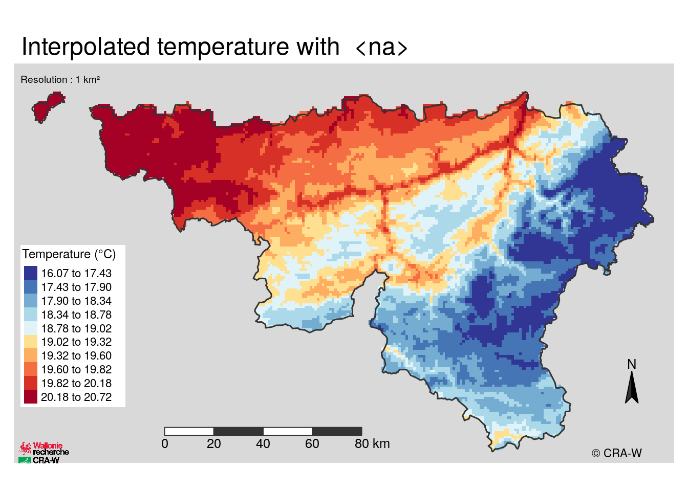

One of the objectives of the AGROMET project is to make maps to view spatialized data. That’s why I tried to create a template map to view the different tests of spatialization.
To do that, I used data from the AGROMET API using methods I have already detailed before.
Get map of Wallonia
Source : Raster data acquisition
We need an outline map to limit the map to Wallonia. We can get the font of Wallonia with getData() function.
Create a template to view spatialized data
Prepare a data set to spatialize
We have made a sample data set with one hour of record from all the stations and we spatialized temperature from a model which predict temperature on altitude, orientation and slope. This model is false but is sufficient to realize a first test for the template map.
Build the map
A few things about updates and installation of packages
For the creation of the template, I used an R package : tmap. All the informations about this package are available to this link.
However, the installation of this package needs the installation of some dependencies on Linux to run correctly. The GitHub repository of tmap has a script for the installation of all the dependencies.
I remind that I work on a virtual machine. This one had to be updated because the dependencies were not installed. The virtual machine runs with Docker, so it is the container Docker which was updated by rebuilding the image.
NB : Working in a virtual machine enable to do these actions without any risk. If you do not use a virtual machine, you have the risk to break your environment and spend a lot of time to rebuild it. The only inconvenient of the virtual machine is that you need to do the installation of the package every time you reload the machine if this package is not installed in the container.
Once the installation of tmap is done, a lot of options to create maps are available.
create_map_tsa <- function(
spatial_data.sp = NULL,
method.chr = NULL,
type.chr = NULL){
library(tmap)
be.sp <- getData('GADM', country = 'BE', level = 1, download = TRUE)
wallonie.sp <- be.sp[be.sp$NAME_1 == "Wallonie",]
wallonie.3812.sp <- spTransform(wallonie.sp, CRS(projargs = dplyr::filter(rgdal::make_EPSG(), code == "3812")$prj4))
file <- "../../data/craw.png"
static <- tm_shape(spatial_data.sp, projection="3812") + # Projection : Belgian Lambert
tm_raster("response", # spatialize temperature
palette = "-RdYlBu",
title = "Temperature (°C)",
auto.palette.mapping=FALSE,
breaks = c(quantile(spatial_data.sp$response, 0, na.rm = TRUE),
quantile(spatial_data.sp$response, 0.1, na.rm = TRUE),
quantile(spatial_data.sp$response, 0.2, na.rm = TRUE),
quantile(spatial_data.sp$response, 0.3, na.rm = TRUE),
quantile(spatial_data.sp$response, 0.4, na.rm = TRUE),
quantile(spatial_data.sp$response, 0.5, na.rm = TRUE),
quantile(spatial_data.sp$response, 0.6, na.rm = TRUE),
quantile(spatial_data.sp$response, 0.7, na.rm = TRUE),
quantile(spatial_data.sp$response, 0.8, na.rm = TRUE),
quantile(spatial_data.sp$response, 0.9, na.rm = TRUE),
quantile(spatial_data.sp$response, 1, na.rm = TRUE))) +
tm_compass(position = c(0.9,0.15), color.light = "grey20") + # north
tm_scale_bar(breaks = NULL, width = NA, size = 0.8, text.color = "grey20", # scale bar
color.dark = "grey20", color.light = "white", lwd = 1, position = c(0.22,0.01),
just = NA) +
tm_logo(file, height = 2, halign = "center", margin = 0.2, # CRA-W logo
position = c(-0.01,-0.04), just = NA) +
tm_shape(wallonie.3812.sp) + # outline of Wallonia
tm_borders("grey20", lwd = 1.5) +
tm_layout(legend.position = c(0.01,0.14), # parameters
legend.height = 0.55,
legend.text.size = 0.7,
legend.bg.color = "white",
legend.title.size = 0.9,
inner.margins = c(0.03, 0.03, 0.07, 0.03),
frame.lwd = 0,
bg.color = "grey85",
main.title = paste("Interpolated temperature with ", method.chr),
title = "Resolution : 1 km²",
title.size = 0.6,
title.position = c(0.01, 0.96)) +
tm_credits("© CRA-W", position = c(.87, 0))
if(type.chr == "static") {
return(static)
}else{
interactive <- tmap_leaflet(static)
return(interactive)
}
}
create_map_tsa(spatial_data.sp = gridded.3812.sp, type.chr = "static", method.chr = "<na>")